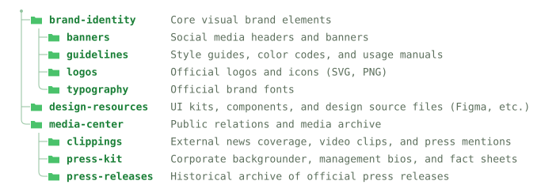

A GitHub Action that turns a [[files]] marker in your
README into a directory tree — and keeps it in sync on every push.
Every tree below is generated by the action from the same
examples/brand
folder — including this page. Set a default in your workflow, or override
per-marker with style="…".
tree block, with aligned descriptions
├── brand-identity/ # Core visual brand elements │ ├── banners/ # Social media headers and banners │ ├── guidelines/ # Style guides, color codes, and usage manuals │ ├── logos/ # Official logos and icons (SVG, PNG) │ └── typography/ # Official brand fonts ├── design-resources/ # UI kits, components, and design source files (Figma, etc.) └── media-center/ # Public relations and media archive ├── clippings/ # External news coverage, video clips, and press mentions ├── press-kit/ # Corporate backgrounder, management bios, and fact sheets └── press-releases/ # Historical archive of official press releases

<details> — click a folder to expand/collapse
On each run the action does four things — all idempotent, so it's safe to run on every push.
Walks the directory into a tree, honouring .gitignore and your excludes.
Draws it as ASCII, an SVG file, or nested <details> — with optional descriptions.
Replaces the content between the filetree markers, leaving the rest of your file alone.
Pushes the updated README (and SVG) back to the branch — or fails a PR in check mode.
<svg> from Markdown,
so the action writes a real .svg and embeds it as an image. That file carries its own
light/dark palette via prefers-color-scheme and a viewBox,
so GitHub renders it theme-aware and responsive for free.
1 — Drop a placeholder anywhere in your README.md:
## Project structure [[files]]
2 — Add a workflow at .github/workflows/update-tree.yml:
name: Update file tree
on:
push:
branches: [main]
permissions:
contents: write # so the action can push the updated README
jobs:
update:
runs-on: ubuntu-latest
steps:
- uses: actions/checkout@v4
- uses: lucianofedericopereira/treegen@v1
with:
style: ascii # ascii | svg | collapsible
That's it. The [[files]] token becomes a managed block that stays in sync forever.
Override options on any single marker:
[[files dir="src" style="svg" max-depth="3" dirs-only="true"]]
The workflow sets defaults; any marker can override them inline. A few of the most useful:
| Attribute | Example | Meaning |
|---|---|---|
dir | dir="src" | Directory to scan (relative to repo root). |
style | style="svg" | ascii, svg, or collapsible. |
max-depth | max-depth="2" | Limit tree depth (0 = unlimited). |
dirs-only | dirs-only="true" | Directories only, hide files. |
exclude | exclude="dist,*.tmp" | Extra ignore patterns (.gitignore syntax). |
descriptions | desc="tree.json" | JSON file of path → comment notes. |
collapse | collapse="true" | Wrap the block in one top-level <details>. |
Standard-library Python only — nothing to install, fast to run.
Folder icons and colours lifted from GitHub's Primer light & dark tokens.
SVG ships a viewBox and scales to any width without distortion.
Re-runs cleanly; a check mode fails PRs when docs go stale.
Markers inside code blocks or `inline code` are left untouched.
mypy --strict clean with a full pytest suite.